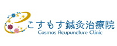

電話でのご予約・お問い合わせはTEL.0985-77-8955
〒889-1609 宮崎市清武町あさひ1-59
施術内容medical info
施術内容
私たちの身体には、東洋医学の『気』という目には見えない『生命エネルギー』が流れています。全身の器官や組織、細胞の一つひとつに生命力を与えているエネルギーの流れです。
ドイツの振動医学では、生命エネルギーが全身をスムーズに流れている状態が健康で、逆に何ら流れが滞ると不調や病気になると考えました。
当院は、身体に副作用のない周波数を使った新しい療法で、不調の原因をつきとめ、調整することにより『生命エネルギー』のスムーズな流れを取り戻し、「免疫力」や「自然治癒力」を引き出して、症状の改善や健康回復・維持や病気の発症予防をサポートいたします。
◆自動測定
初診の方には、まず最初に周波数を使
った自動測定（STI）を受けていただき
各臓器や器官の状態や不調を引き起こ
している原因等を測定いたします。
◆調 整
測定結果をもとに、ずれた周波数を本来
の周波数に戻すよう調整いたします。
生命エネルギーの流れをよくして、免疫
力や自然治癒力を高め、健康回復・維
持していく身体に調整いたします。
【パウルシュミット式バイオレゾナンス療法】
私たちの身体の細胞や臓器もそれぞれ固有の周波数で振動していて、それが放射されています。心身が不調をきたしたり、各臓器が完全に機能しなくなったり、病気に陥ったりすると、その振動が本来の周波数からずれてしまい異常な振動を出すようになります。その振動をキャッチすれば、どこに異常があるかわかります。
ドイツの振動医学は、目には見えない生命エネルギーを振動（周波数）というカタチに数値化して、振動測定器で簡単に扱えるようにしたのです。
鍼灸をご希望の方へ
自動測定により不具合を起こしている
ツボや経絡が特定できますので、最低限
の本数の鍼・灸でより効果的な改善が期
待できます。
施術料金 （税込表示）
| 初診料（初回のみ） | 2,200円 |
| 自動測定（STI） | 11,000円 |
| 調 整 （60分） | 6,600円 |
| お得な回数券 （60分×5回券） |
28,050円 |
| お得な回数券 （60分×10回券） |
46,200円 |
● 自動測定（STI）
不調の原因となっている周波数
を測定し、異常な周波数を検出します。
● 調 整 （60分）
異常な周波数を本来の周波数に戻すよ
う調整します。生命エネルギーの流れを
よくして、免疫力や自然治癒力を高め、
健康回復・維持していく身体に調整しま
す。
●お得な回数券 （60分×5回券）
60分の調整×5回・・15％引でお得です
●お得な回数券 （60分×10回券）
60分の調整×10回・・30％引でお得です
◆クレジットカードでのお支払いが可能です。


今ある症状や不調を引き起こしている「生活習慣や環境」のなかにある原因を検査、分析して、それを削減し調整していくことで、本来の生命力を引き出し、健康回復を目指します
 ．
．
体調不良（気の滞り）の原因は、以下の生活習慣や環境に起因します。
①化学物質（農薬・殺虫剤・防腐剤・食品
添加物・薬品など）の影響
②潜在感染（ウィルス・細菌・カビ・寄生虫
など）の影響
③金属汚染（水銀・鉛・アルミニウム・パラ
ジウムなど重金属）の影響
④電磁波障害（携帯電話・家電製品・パソ
コン・コードレスフォンなど）の影響
⑤ジオパシックストレス（水脈・断層・グリッ
ドの放射帯）による影響
⑥心理的・精神的ストレスの影響
⑦その他の影響
おひとりおひとりの症状に合ったオーダー
メイドメニューで、心身の健康をサポートい
たします。
身体に優しい施術で、ゆったりと安らぎを
感じながら ぜひ癒しの空間をご体感くだ
さい。
◆完全予約制となっております。
ご予約は ハリキューゴーゴー
TEL 0985-77-8955
営業時間
| 月 | 火 | 水 | 木 | 金 | 土 | |
|---|---|---|---|---|---|---|
| 9:00～12:00 | ○ | ○ | ○ | ○ | ○ | ○ |
| 14:00～18:00 | ○ | ○ | ○ | ○ | ○ | － |
◆土曜日は午前中のみの診療です。
※日曜日と祝日は休診です。
こすもす鍼灸治療院
ご予約は ハリキューゴーゴー
TEL 0985-77-8955
〒889-1609 宮崎市清武町あさひ1-59